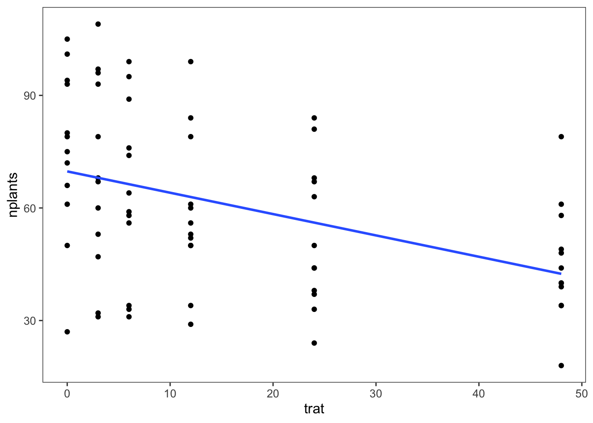
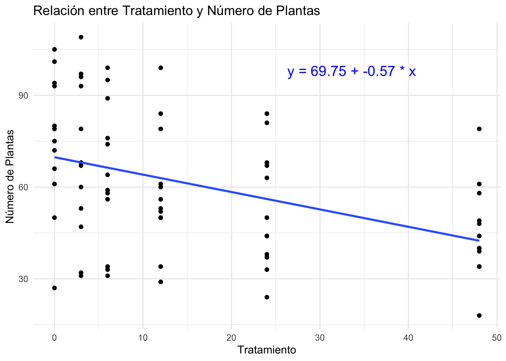

Codigo
# Cargar paquetes necesarios
library(tidyverse)
library(readxl)
library(ggplot2)
library(ggthemes)
library(DT)El análisis de regresión lineal es una técnica estadística fundamental utilizada para entender la relación entre una variable dependiente (también conocida como variable respuesta) y una o más variables independientes (también conocidas como predictores o variables explicativas). La premisa básica de la regresión lineal es que esta relación puede ser representada por una línea recta.
La regresión lineal busca ajustar la mejor línea recta (llamada línea de regresión) que describe cómo la variable dependiente cambia en función de las variables independientes. La ecuación de una regresión lineal simple (con una sola variable independiente) se expresa de la siguiente manera:
y = ß0 + ß1x + €
Donde:
y es la variable dependiente.x es la variable independiente.ß0 es el intercepto de la línea de regresión, que representa el valor de y cuando x es cero.ß1 es la pendiente de la línea de regresión, que indica el cambio esperado en y por cada unidad de cambio en x.€ es el término de error que representa la variabilidad en y que no puede ser explicada por x.Predicción: Uno de los usos más comunes del análisis de regresión lineal es la predicción de valores futuros. Por ejemplo, un análisis de regresión puede predecir las ventas futuras de un producto en función de factores como el precio y la publicidad.
Comprensión de Relaciones: Ayuda a entender la naturaleza y la fuerza de la relación entre las variables. Esto es crucial en investigación y en la toma de decisiones basada en datos.
Identificación de Factores Clave: Permite identificar qué factores (variables independientes) tienen un impacto significativo en el resultado (variable dependiente). Esto es útil para optimizar procesos y recursos.
Evaluación de Modelos: A través de estadísticas como el coeficiente de determinación (( R^2 )), el análisis de regresión permite evaluar qué tan bien el modelo se ajusta a los datos observados.
Simplicidad y Aplicabilidad: La regresión lineal es relativamente simple de entender e implementar. Sus aplicaciones son amplias y se utilizan en campos tan diversos como economía, biología, ingeniería, y ciencias sociales.
A continuación, se presenta un ejemplo práctico de cómo se realiza un análisis de regresión lineal en R, utilizando un conjunto de datos de ejemplo.
Preparación Pre-Análisis
Primero, cargamos los paquetes necesarios y los datos:
Visualización de Datos
Visualizamos los datos para obtener una idea preliminar de la relación entre las variables:

Ajuste del Modelo de Regresión Lineal
Ajustamos un modelo de regresión lineal simple:
Call:
lm(formula = nplants ~ trat, data = datos)
Residuals:
Min 1Q Median 3Q Max
-42.745 -12.303 -2.391 15.684 40.961
Coefficients:
Estimate Std. Error t value Pr(>|t|)
(Intercept) 69.7452 3.4156 20.420 < 2e-16 ***
trat -0.5687 0.1510 -3.766 0.000343 ***
---
Signif. codes: 0 '***' 0.001 '**' 0.01 '*' 0.05 '.' 0.1 ' ' 1
Residual standard error: 21.11 on 70 degrees of freedom
Multiple R-squared: 0.1684, Adjusted R-squared: 0.1566
F-statistic: 14.18 on 1 and 70 DF, p-value: 0.0003426Incluir la Ecuación en el Gráfico
Extraemos los coeficientes del modelo y creamos el gráfico con la ecuación de la regresión lineal anotada:
# Crear el gráfico con la ecuación del modelo lineal
ggplot(datos, aes(x = trat, y = nplants)) +
geom_point() +
geom_smooth(method = "lm", se = FALSE) +
annotate("text", x = max(datos$trat) * 0.7, y = max(datos$nplants) * 0.9,
label = ecuacion, color = "blue", size = 5) +
labs(title = "Relación entre Tratamiento y Número de Plantas",
x = "Tratamiento",
y = "Número de Plantas") +
theme_minimal()
Interpretación del Modelo
El resumen del modelo (summary(modelo)) proporciona información sobre los coeficientes estimados ß0 y ß1, así como estadísticas importantes como el valor p y el coeficiente de determinación R^2, que nos indican qué tan bien el modelo se ajusta a los datos.
Conclusión
El análisis de regresión lineal es una herramienta poderosa y versátil que permite a los investigadores y profesionales de diversas disciplinas comprender y predecir comportamientos y tendencias. Su simplicidad y eficacia lo convierten en un componente esencial del análisis estadístico y la modelización de datos.
# Análisis de Regresión Lineal
El análisis de regresión lineal es una técnica estadística fundamental utilizada para entender la relación entre una variable dependiente (también conocida como variable respuesta) y una o más variables independientes (también conocidas como predictores o variables explicativas). La premisa básica de la regresión lineal es que esta relación puede ser representada por una línea recta.
### ¿Qué es la Regresión Lineal?
La regresión lineal busca ajustar la mejor línea recta (llamada línea de regresión) que describe cómo la variable dependiente cambia en función de las variables independientes. La ecuación de una regresión lineal simple (con una sola variable independiente) se expresa de la siguiente manera:
**y = ß0 + ß1x + €**
Donde:
- `y` es la variable dependiente.
- `x` es la variable independiente.
- `ß0` es el intercepto de la línea de regresión, que representa el valor de `y` cuando `x` es cero.
- `ß1` es la pendiente de la línea de regresión, que indica el cambio esperado en `y` por cada unidad de cambio en `x`.
- `€` es el término de error que representa la variabilidad en `y` que no puede ser explicada por `x`.
### Importancia del Análisis de Regresión Lineal
1. **Predicción**: Uno de los usos más comunes del análisis de regresión lineal es la predicción de valores futuros. Por ejemplo, un análisis de regresión puede predecir las ventas futuras de un producto en función de factores como el precio y la publicidad.
2. **Comprensión de Relaciones**: Ayuda a entender la naturaleza y la fuerza de la relación entre las variables. Esto es crucial en investigación y en la toma de decisiones basada en datos.
3. **Identificación de Factores Clave**: Permite identificar qué factores (variables independientes) tienen un impacto significativo en el resultado (variable dependiente). Esto es útil para optimizar procesos y recursos.
4. **Evaluación de Modelos**: A través de estadísticas como el coeficiente de determinación (\( R^2 \)), el análisis de regresión permite evaluar qué tan bien el modelo se ajusta a los datos observados.
5. **Simplicidad y Aplicabilidad**: La regresión lineal es relativamente simple de entender e implementar. Sus aplicaciones son amplias y se utilizan en campos tan diversos como economía, biología, ingeniería, y ciencias sociales.
### Ejemplo Práctico
A continuación, se presenta un ejemplo práctico de cómo se realiza un análisis de regresión lineal en R, utilizando un conjunto de datos de ejemplo.
**Preparación Pre-Análisis**
Primero, cargamos los paquetes necesarios y los datos:
```{r}
# Cargar paquetes necesarios
library(tidyverse)
library(readxl)
library(ggplot2)
library(ggthemes)
library(DT)
```
```{r}
# Importar datos desde un archivo Excel
datos <- read_excel("dados-diversos.xlsx", sheet = "estande")
# Mostrar los datos en una tabla interactiva
datos |>
DT::datatable(
extensions = 'Buttons',
options = list(dom = 'Bfrtip',
buttons = c('excel', "csv")))
```
**Visualización de Datos**
Visualizamos los datos para obtener una idea preliminar de la relación entre las variables:
```{r}
datos |>
ggplot(aes(x = trat, y = nplants)) +
geom_point() +
geom_smooth(method = "lm", se = FALSE)+
theme_few()
```
**Ajuste del Modelo de Regresión Lineal**
Ajustamos un modelo de regresión lineal simple:
```{r}
modelo <- lm(nplants ~ trat, data = datos)
summary(modelo)
```
**Incluir la Ecuación en el Gráfico**
Extraemos los coeficientes del modelo y creamos el gráfico con la ecuación de la regresión lineal anotada:
```{r}
# Extraer coeficientes del modelo
intercepto <- coef(modelo)[1]
pendiente <- coef(modelo)[2]
```
```{r}
# Crear la ecuación en formato de texto
ecuacion <- paste("y =", round(intercepto, 2), "+", round(pendiente, 2), "* x")
```
```{r}
# Crear el gráfico con la ecuación del modelo lineal
ggplot(datos, aes(x = trat, y = nplants)) +
geom_point() +
geom_smooth(method = "lm", se = FALSE) +
annotate("text", x = max(datos$trat) * 0.7, y = max(datos$nplants) * 0.9,
label = ecuacion, color = "blue", size = 5) +
labs(title = "Relación entre Tratamiento y Número de Plantas",
x = "Tratamiento",
y = "Número de Plantas") +
theme_minimal()
```
**Interpretación del Modelo**
El resumen del modelo (`summary(modelo)`) proporciona información sobre los coeficientes estimados `ß0` y `ß1`, así como estadísticas importantes como el valor p y el coeficiente de determinación `R^2`, que nos indican qué tan bien el modelo se ajusta a los datos.
**Conclusión**
El análisis de regresión lineal es una herramienta poderosa y versátil que permite a los investigadores y profesionales de diversas disciplinas comprender y predecir comportamientos y tendencias. Su simplicidad y eficacia lo convierten en un componente esencial del análisis estadístico y la modelización de datos.